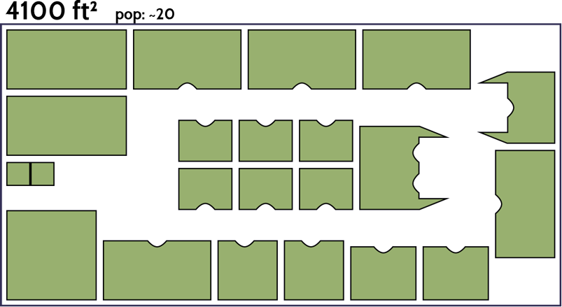
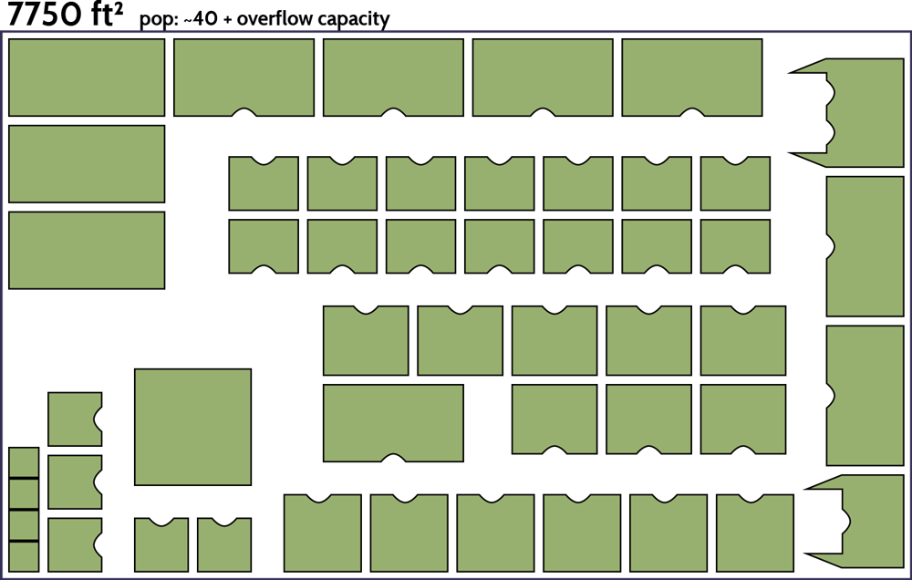

Camp Second Chance
(206) 578-6551
The search for a new home...
As a newly formed camp, we have yet to establish a stable location or rotation of locations. At present we are on Seattle City land, and in need to vacate to a longer term location ASAP.
From our experience, Church property, City property, or State property are the best fits for our sort of encampment, and we are heppy to work with all the appropriate agencies to get ourselves established, but a sufficiently inexpensive private location could also work.
Our needs
The Space to Grow
Right now, at its minimum footprint, our camp requires at least 4100 square feet to house all of our campers and common areas. That layout looks like this, in its most square arrangement.
Because our goal is to grow our core team to be 40 strong, and have room to overflow other homeless individuals in need, we ideally need a space twice that size. That might look something like this.
Services
At a minimum, we need:
- to be within walking distance of a bus stop
- have nearby access to potable water
- be far enough away from residential lots (25 ft buffer beteen our camp and any lots zoned residential)
- UNLESS we are on Church grounds, in which case the buffer is not required, but still prefered
We would also love to have the following available:
- A direct link to external power, as currently we are paying a great deal to keep our generator running.
- Direct access to potable water from a tap.
- Access to nearby showers.
- Trash Service.
Finally, if we can get access to the following close by to the site, even driving distance, it helps us out:
- A neraby Library or other source of stable internet access.
- A kitchen to do dishes, bake, and prepare larger meals.